Bayes AI
Unit 5: Stochastic Processes
Vadim Sokolov
George Mason University
Spring 2025
Definition
- An instance (realization) of a process is a function \(Y:~ U \rightarrow S\)
- From domain of index set \(U\)
- To process values \(S\), called state-space.
The process then is the distribution over the space of functions from \(U\) to \(S\).
Examples
- Random Walk, e.g. stock prices
- Markov Chains: chess
- Poisson Process
- Queuing Theory: number of customers in a queue, varying over time as customers arrive and are served.
- Gaussian Processes: engineering surrogates
Brownian Motion
- Brownian Motion, named after botanist Robert Brown
- Is a fundamental concept in the theory of stochastic processes.
- It describes the random motion of particles suspended in a fluid (liquid or gas), as they are bombarded by the fast-moving molecules in the fluid.
A one-dimensional Brownian Motion (also known as Wiener process) is a continuous time stochastic process \(B(t)_{t\ge 0}\) with the following properties
- \(B(0) = 0\) almost surely
- \(B(t)\) has stationary independent increments: \(B(t) - B(s) \sim N(0, t-s)\) for \(0 \le s < t\)
- \(B(t)\) is continuous function of \(t\)
- For each time \(t > 0\), the random variable \(B(t)\) is normally distributed with mean 0 and variance \(t\), i.e., \(B(t) \sim N(0, t)\).
Formal Definition
Formally brownian motion is a stochastic process \(B(t)\) is a family of real random variables indexed by the set of nonnegative real numbers \(t\).
Figure 1: Brownian Motion
Thus, for any times \(0 \leq t_1 < t_2 < ... < t_n\), the random variables \(B(t_2) - B(t_1)\), \(B(t_3) - B(t_2)\), …, \(B(t_n) - B(t_{n-1})\) are independent and the function \(t \mapsto B(t)\) is continuous almost surely.
Merton’s Jump Diffusion Model
- Introduced jumps to the model.
- The additive jump term addresses the issues, asymmetry, and heavy tails in the distribution.
- Merton’s Jump Stochastic volatility model has a discrete-time version for log-returns, \(y_t\), with jump times, \(J_t\), jump sizes, \(Z_t\), and spot stochastic volatility, \(V_t\), given by the dynamics \[\begin{align*} y_{t} & \equiv \log \left( S_{t}/S_{t-1}\right) =\mu + V_t \varepsilon_{t}+J_{t}Z_{t} \\V_{t+1} & = \alpha_v + \beta_v V_t + \sigma_v \sqrt{V_t} \varepsilon_{t}^v \end{align*}\] where \(\mathbb{P} \left ( J_t =1 \right ) = \lambda\), \(S_t\) denote a stock or asset price and log-returns \(y^t\) is the log-return. The errors \((\varepsilon_{t},\varepsilon_{t}^v)\) are possibly correlated bivariate normals.
The investor must obtain optimal filters for \((V_t,J_t,Z_t)\), and learn the posterior densities of the parameters \((\mu, \alpha_v, \beta_v, \sigma_v^2 , \lambda )\). These estimates will be conditional on the information available at each time.
Gaussian Processes
- A Gaussian Process (GP) is a collection of random variables, any finite number of which have a joint Gaussian distribution.
- Used for modeling and predicting, e.g. regression and classification tasks in machine learning.
- \(n\) points from Gaussian Process is completely specified by its \(n\)-dimensional mean \(\mu\) and covariance matrix \(\Sigma\).
- Index of the GP is a real number \(x\) and values are also real numbers.
Need to define mean and covariance functions
- Typically: \(U = \mathbb{R^d}\), \(S = \mathbb{R}\)
- Mean \(m(x):~ U \rightarrow S\) and covariance is defined by function \(k(x, x'): :~ U\times U \rightarrow S\), \(x,x' \in U\)
- The mean function defines the average value of the function at point \(x\)
- Covariance function, also known as the kernel, defines the extent to which the values of the function at two points \(x\) and \(x'\) are correlated.
- Typical notation is \[ f(x) \sim \mathcal{GP}(m(x), k(x, x')). \]
\(k(x, x') = \mathbb{E}[(f(x) - m(x))(f(x') - m(x'))]\) describes the amount of dependence between the values of the function at two different points in the input space.
Need to define mean and covariance functions
- Typically the mean function is less important than the covariance function.
- Most of the time data scientists will use a zero mean function, \(m(x)=0\), and focus on the covariance function.
- The kernel function is often chosen to be a function of the distance between the two points \(d = \|x-x'\|_2\).
- Typically kernel function peaks at \(d=0\) and decays as \(d\) increases.
Squared exponential
- The most commonly used kernel function is the squared exponential kernel \[ k(x, x') = \sigma^2 \exp\left(-\frac{\|x-x'\|_2^2}{2l^2}\right) \]
- \(\sigma^2\) is the variance, controls the vertical variation (amplitude)
- \(l\) is the length scale parameter, controls horizontal variation (number of “bumps” or smoothness)
\(k(x,x) = \sigma^2\) and \(k(x,x') \rightarrow 0\) as \(\|x-x'\|_2 \rightarrow \infty\).
Gaussian Process Demo
Generating a sequence 100 inputs (process indexes)
and then define the mean function and the covariance function
The covariance matrix is then defined as
Gaussian Process Demo
Generate a sample from the GP using the mvrnorm function from the MASS package and plot a sample
Figure 2: Sample from a Gaussian Process
A collection of 100 points of function \(f(x)\) sampled from a Gaussian Process with zero mean and squared exponential kernel for the set of 100 indexes \(x =(0,0.1,0.2,\ldots,10)\).
Gaussian Process Demo
Let’s generate a few more samples from the same GP and plot them together
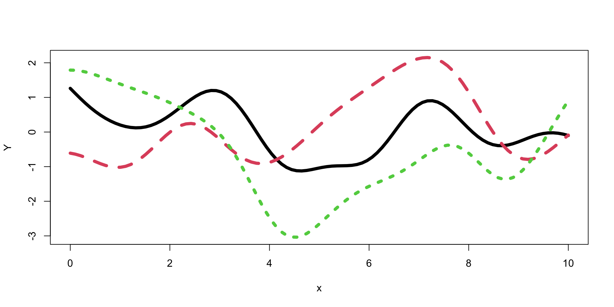Figure 3: Samples from a Gaussian Process
Making Predictions with Gaussian Processes
- Assuming input indexes \(X = (x_1,\ldots,x_n)\) and outputs \(Y = (y_1,\ldots,y_n)\) are a realization of a Gaussian Process
- Can we predict at new inputs \(x_* \in \mathbb{R}^q\). The joint distribution of the observed data \(Y\) and the new data \(y_*\) is given by \[ \begin{bmatrix} Y \\ y_* \end{bmatrix} \sim \mathcal{N} \left ( \begin{bmatrix} \mu \\ \mu_* \end{bmatrix}, \begin{bmatrix} K & K_* \\ K_*^T & K_{**} \end{bmatrix} \right ) \] where \(K = k(X, X)\in \mathbb{R}^{n\times n}\), \(K_* = k(X, x_*)\in \mathbb{R}^{n\times q}\), \(K_{**} = k(x_*, x_*) \in \mathbb{R}^{q\times q}\), \(\mu = \mathbb{E}[Y]\), and \(\mu_* = \mathbb{E}[y_*]\). The conditional distribution of \(y_*\) given \(y\) is then given by \[ y_* \mid Y \sim \mathcal{N}(\mu_{\mathrm{post}}, \Sigma_{\mathrm{post}}). % y_* \mid Y \sim \mathcal{N}(\mu_* + K_* K^{-1} (y - \mu), K_{**} - K_*^T K^{-1} K_*). \]
Making Predictions with Gaussian Processes
The mean of the conditional distribution is given by \[ \mu_{\mathrm{post}} = \mu_* + K_*^TK^{-1} (Y - \mu) \qquad(1)\] and the covariance is given by \[ \Sigma_{\mathrm{post}} = K_{**} - K_*^T K^{-1} K_*. \qquad(2)\]
Equation 1 and Equation 2 are convenient properties of a multivariate normal distribution.
Gaussian Process for \(\sin\) function
- The additive term
diag(eps, n)\(=\epsilon I\) adds a diagonal matrix with the small \(\epsilon\) on the diagonal.
Why?
Gaussian Process for \(\sin\) function
Now we generate a new set of inputs \(x_*\) and calculate the covariance matrices \(K_*\) and \(K_{**}\).
Notice, we did not add \(\epsilon I\) to \(K_*\) = KX matrix, but to add it to \(K_{**}\) = KXX to guarantee that the resulting posterior covariance matrix is non-singular (invert able).
Gaussian Process for \(\sin\) function
Now, we can generate a sample from the posterior distribution over \(y_*\), given \(Y\)
Code
plot_gp = function(mup, Sigmap, X, Y, XX, YY){
q1 = mup + qnorm(0.05, 0, sqrt(diag(Sigmap)))
q2 = mup + qnorm(0.95, 0, sqrt(diag(Sigmap)))
matplot(XX, t(YY), type="l", col="gray", lty=1, xlab="x", ylab="y")
points(X, Y, pch=20, cex=2)
lines(XX, sin(XX), col="blue")
lines(XX, mup, lwd=2)
lines(XX, q1, lwd=2, lty=2, col=2)
lines(XX, q2, lwd=2, lty=2, col=2)
}
YY = mvrnorm(100, mup, Sigmap)
plot_gp(mup, Sigmap, X, Y, XX, YY)MLE for Gaussian Process
- Use the observed data to estimate those to parameters.
- In the context of GP models, they are call hyper-parameters.
Likelihood: \[ p(Y \mid X, \sigma, l) = \frac{1}{(2\pi)^{n/2} |K|^{1/2}} \exp \left ( -\frac{1}{2} Y^T K^{-1} Y \right ) \] where \(K = K(X,X)\) is the covariance matrix. We assume mean is zero, to simplify the formulas. The log-likelihood is given by \[ \log p(Y \mid X, \sigma, l) = -\frac{1}{2} \log |K| - \frac{1}{2} Y^T K^{-1} Y - \frac{n}{2} \log 2\pi. \]
MLE for Gaussian Process
Let’s implement a function that calculates the log-likelihood of the data given the hyper-parameters \(\sigma\) and \(l\) and use optim function to find the maximum of the log-likelihood function.
MLE for Gaussian Process
Make predictions about the output values at new inputs \(x_*\).
Code
l = par[2]; sigma = par[1]
predplot = function(X, Y, XX, YY, l, sigma) {
K = outer(X[,1],X[,1], sqexpcov,l,sigma) + diag(eps, n)
KX = outer(X[,1], XX[,1],sqexpcov,l,sigma)
KXX = outer(XX[,1],XX[,1], sqexpcov,l,sigma) + diag(eps, q)
Si = solve(K)
mup = t(KX) %*% Si %*% Y # we assume mu is 0
Sigmap = KXX - t(KX) %*% Si %*% KX
YY = mvrnorm(100, mup, Sigmap)
plot_gp(mup, Sigmap, X, Y, XX, YY)
}
predplot(X, Y, XX, YY, l, sigma)We can see that our uncertainty is much “tighter”
Log-likelihood Derivative
Some matrix calculus: \[ \frac{\partial Y^T K^{-1} Y}{\partial \theta} = Y^T \frac{\partial K^{-1}}{\partial \theta} Y. \] The derivative of the inverse matrix \[ \frac{\partial K^{-1}}{\partial \theta} = -K^{-1} \frac{\partial K}{\partial \theta} K^{-1}. \] and the log of the determinant of a matrix \[ \frac{\partial \log |K|}{\partial \theta} = \mathrm{tr} \left ( K^{-1} \frac{\partial K}{\partial \theta} \right ), \]
Log-likelihood Derivative
Calculate the derivative of the log-likelihood function with respect to \(\theta\) \[ \frac{\partial \log p(Y \mid X,\theta)}{\partial \theta} = -\frac{1}{2}\frac{\partial \log |K|}{\partial \theta} + \frac{1}{2} Y^T \frac{\partial K^{-1}}{\partial \theta} Y. \] Putting it all together, we get \[ \frac{\partial \log p(Y \mid X,\theta)}{\partial \theta} = -\frac{1}{2} \mathrm{tr} \left ( K^{-1} \frac{\partial K}{\partial \theta} \right ) + \frac{1}{2} Y^T K^{-1} \frac{\partial K}{\partial \theta} K^{-1} Y. \]
Log-likelihood Derivative for squared exponential kernel
\[ K_{ij} = k(x_i, x_j) = \sigma^2 \exp \left ( -\frac{1}{2} \frac{(x_i - x_j)^2}{l^2} \right ). \] The derivative of the covariance matrix with respect to \(\sigma\) is given by \[ \frac{\partial K_{ij}}{\partial \sigma} = 2\sigma \exp \left ( -\frac{1}{2} \frac{(x_i - x_j)^2}{l^2} \right );~\frac{\partial K}{\partial \sigma} = \dfrac{2}{\sigma}K. \] The derivative of the covariance matrix with respect to \(l\) is given by \[ \frac{\partial K_{ij}}{\partial l} = \sigma^2 \exp \left ( -\frac{1}{2} \frac{(x_i - x_j)^2}{l^2} \right ) \frac{(x_i - x_j)^2}{l^3};~ \frac{\partial K}{\partial l} = \frac{(x_i - x_j)^2}{l^3} K. \]
Log-likelihood Derivative
Now we can implement a function that calculates the derivative of the log-likelihood function with respect to \(\sigma\) and \(l\).
# Derivative of the log-likelihood function with respect to sigma
dloglik_sigma = function(par, X, Y) {
sigma = par[1]; l = par[2]
K = outer(X[,1],X[,1], sqexpcov,l,sigma) + diag(eps, n)
Si = solve(K)
dK = 2*K/sigma
tr = sum(diag(Si %*% dK))
return(-(-0.5 * tr + 0.5 * t(Y) %*% Si %*% dK %*% Si %*% Y))
}
# Derivative of the log-likelihood function with respect to l
dloglik_l = function(par, X, Y) {
sigma = par[1]; l = par[2]
K = outer(X[,1],X[,1], sqexpcov ,l,sigma) + diag(eps, n)
Si = solve(K)
dK = outer(X[,1],X[,1], function(x, x1) (x - x1)^2)/l^3 * K
tr = sum(diag(Si %*% dK))
return(-(-0.5 * tr + 0.5 * t(Y) %*% Si %*% dK %*% Si %*% Y))
}
# Gradient function that returns a vector of derivatives
gnlg = function(par,X,Y) {
return(c(dloglik_sigma(par, X, Y), dloglik_l(par, X, Y)))
}Log-likelihood Derivative
Now we can use the optim function to find the maximum of the log-likelihood function and provide the derivative function we just implemented.
par1 = optim(c(1,1), fn=loglik, gr=gnlg ,X=X, Y=Y,method="BFGS")$par
l = par1[2]; sigma = par1[1]
print(par1)[1] 1.48443 2.39151The result is the same compared to when we called optim without the derivative function. Even execution time is the same for our small problem. However, at larger scale, the derivative-based optimization algorithm will be much faster.
Use R Package for Gaussian Processes
Code
[1] 2.36025Prediction
Code
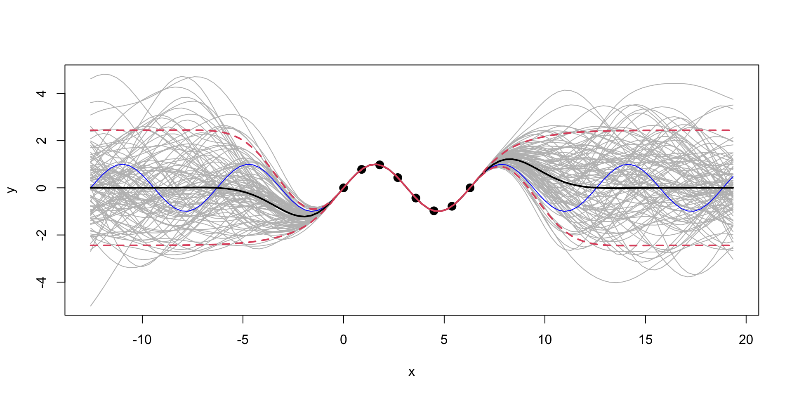
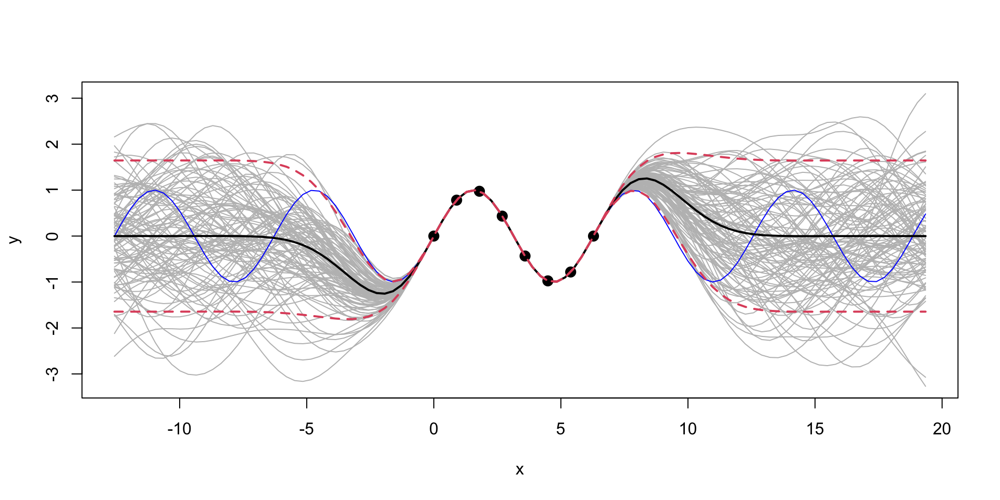
Extrapolation: Posterior distribution over \(y_*\), given \(Y\)
We can see that outside of the range of the observed data, the model with \(\sigma=1\) is more “confident” in its predictions.
Gaussian Process for Motorcycle Accident Data
We first estimate the length scale parameter \(l\) using the laGP package.
Now we plot the data and the fit using the estimated length scale parameter \(l\).
Code
library(ggplot2)
XX = matrix(seq(2.4, 55, length = 499), ncol=1)
p = predGP(gp, XX)
N = 499
q1 = qnorm(0.05, mean = p$mean, sd = sqrt(diag(p$Sigma)))
q2 = qnorm(0.95, mean = p$mean, sd = sqrt(diag(p$Sigma)))
q3 = qnorm(0.5, mean = p$mean, sd = sqrt(diag(p$Sigma)))
ggplot() + geom_point(aes(x=X,y=Y)) + geom_line(aes(x=XX,y=q3)) + geom_ribbon(aes(x=XX,ymin=q1, ymax=q2), alpha=0.2)Motorcycle Accident Data. Black line is the mean of the posterior distribution over \(y_*\), given \(Y\). Blue lines are the 95% confidence interval.
Gaussian Process for Motorcycle Accident Data
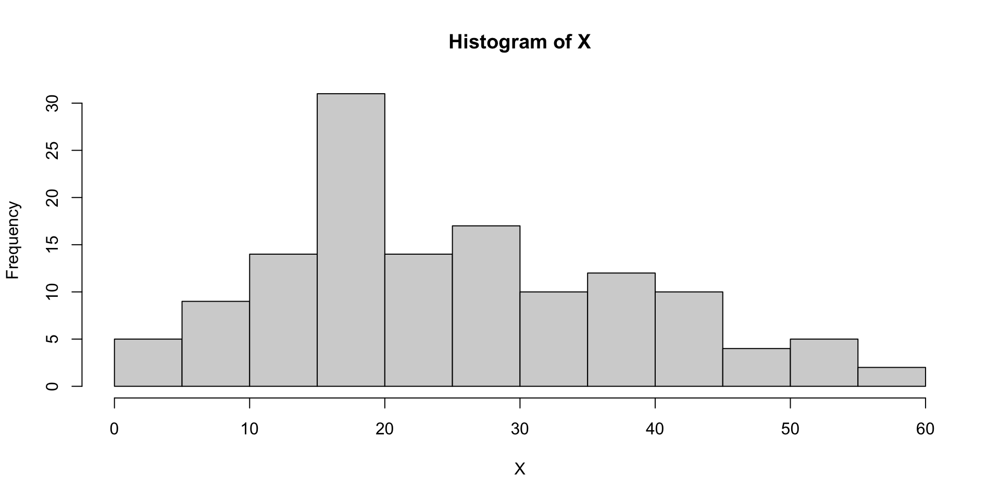Histogram of time values
The \(\sqrt{n}\) decay in variance of the posterior distribution is a property of the squared exponential kernel.
Bayesian Optimisation
Definition
- Bayesian optimization is a sequential design strategy for global optimization of black-box functions.
- It is particularly well-suited for optimization of high-cost functions, situations where the number of function evaluations is limited, and noisy evaluations.
- The goal is to find the global minimum of an unknown function \(f(x)\), where \(x \in \mathbb{R}^d\).
- The function is assumed to be a black-box, i.e., we can evaluate it at any point \(x\) but we do not have access to its analytical form.
Basic Idea
graph LR
NS[Decision on Next Samples]--Collect-->S[System Under Study]
S--Observe-->NS
- Multi-Armed Bandits
- Q-Learning
- Active Learning
- Reinforcement Learning
- Bayesian Optimization
Bayesian Optimization
Given a function \(f(x)\), that is not known analytically, it can represent, for example, output of a complex computer program. The goal is to optimize \[ x^* = \arg\min_x f(x). \]
The Bayesian approach to this problem is the following:
- Define a prior distribution over \(f(x)\)
- Calculate \(f\) at a few points \(x_1, \ldots, x_n\)
- Repeat until convergence:
- Update the prior to get the posterior distribution over \(f(x)\)
- Choose the next point \(x^+\) to evaluate \(f(x)\)
- Calculate \(f(x^+)\)
- Pick \(x^*\) that corresponds to the smallest value of \(f(x)\) among evaluated points
Where to sample next?
The expected improvement (EI) acquisition function \[ f^* = \min y \] Our current best. At a given point \(x\) and function value \(y = f(x)\), the expected improvement function is defined as \[ a(x) = \mathbb{E}\left[\max(0, f^* - y)\right], \] The function that we calculate expectation of \[ u(x) = \max(0, f^* - y) \] is the utility function. Thus, the acquisition function is the expected value of the utility function.
Acquisition function
- Given GP approximation for \(f\), we can calculate the acquisition function analytically.
- The posterior distribution of Normal \(f(x)\mid x \sim N(\mu,\sigma^2)\), then the acquisition function is \[\begin{align*} a(x) &= \mathbb{E}\left[\max(0, f^* - y)\right] \\ &= \int_{-\infty}^{\infty} \max(0, f^* - y) \phi(y,\mu,\sigma^2) dy \\ &= \int_{-\infty}^{f^*} (f^* - y) \phi(y,\mu,\sigma^2) dy \end{align*}\] where \(\phi(y,\mu,\sigma^2)\) is the probability density function of the normal distribution. A useful identity is
Acquisition function
\[ \int y \phi(y,\mu,\sigma^2) dy =\frac{1}{2} \mu \text{erf}\left(\frac{y-\mu }{\sqrt{2} \sigma }\right)-\frac{\sigma e^{-\frac{(y-\mu )^2}{2 \sigma ^2}}}{\sqrt{2 \pi }}, \] where \(\Phi(y,\mu,\sigma^2)\) is the cumulative distribution function of the normal distribution. Thus, \[ \int_{-\infty}^{f^*} y \phi(y,\mu,\sigma^2) dy = \frac{1}{2} \mu (1+\text{erf}\left(\frac{f^*-\mu }{\sqrt{2} \sigma }\right))-\frac{\sigma e^{-\frac{(f^*-\mu )^2}{2 \sigma ^2}}}{\sqrt{2 \pi}} = \mu \Phi(f^*,\mu,\sigma^2) + \sigma^2 \phi(f^*,\mu,\sigma^2). \]
we can write the acquisition function as \[ a(x) = \dfrac{1}{2}\left(\sigma^2 \phi(f^*,\mu,\sigma^2) + (f^*-\mu)\Phi(f^*,\mu,\sigma^2)\right) \]
Acquisition function
Let’s implement it
Taxi Fleet Optimisation
- Black box: taxi fleet simulator from Emukit project.
- Input: fleet size
- Simulates the taxi fleet operations and calculates the profit.

Taxi Simulator Visualization
Taxi Fleet Optimisation
- We start with initial set of three designs \(x = (10,30,90)\), where \(x\) is the number of the taxis in
- Observe profit=(3.1,3.6,6.6)
Define a helper function to plot the GP emulator
plotgp = function(x,y,XX,p) {
q1 = qnorm(0.05, mean = p$mean, sd = sqrt(diag(p$Sigma)))
q2 = qnorm(0.95, mean = p$mean, sd = sqrt(diag(p$Sigma)))
q3 = qnorm(0.5, mean = p$mean, sd = sqrt(diag(p$Sigma)))
ggplot() + geom_point(aes(x=x,y=y)) + geom_line(aes(x=XX,y=q3)) + geom_ribbon(aes(x=XX,ymin=q1, ymax=q2), alpha=0.2)
}Fit GP
Plot the Fit
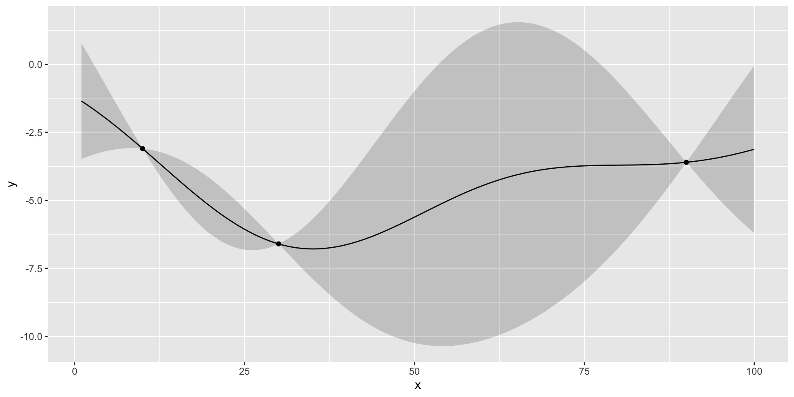there is potentially a better value at around 50 taxis
Run Optimisation
Run Optimisation
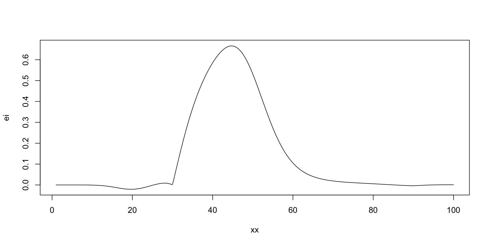
[1] 44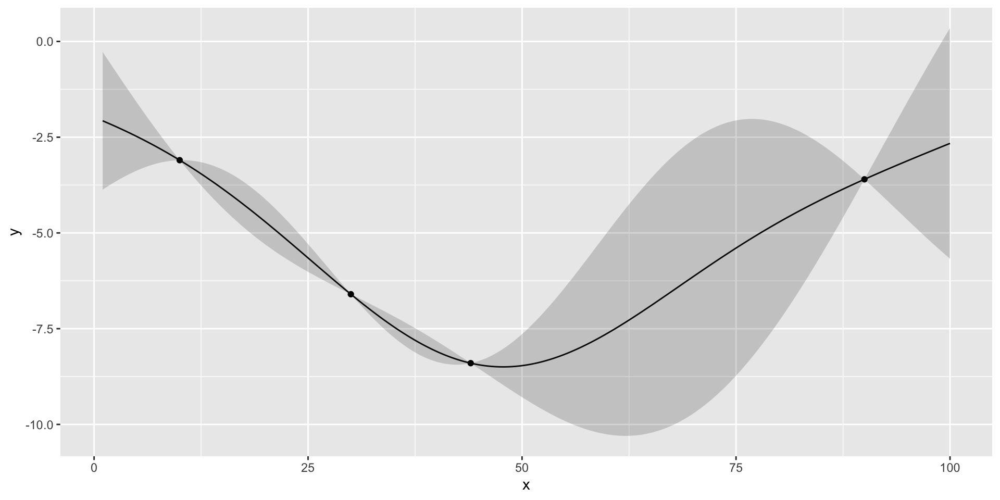
Run Optimisation
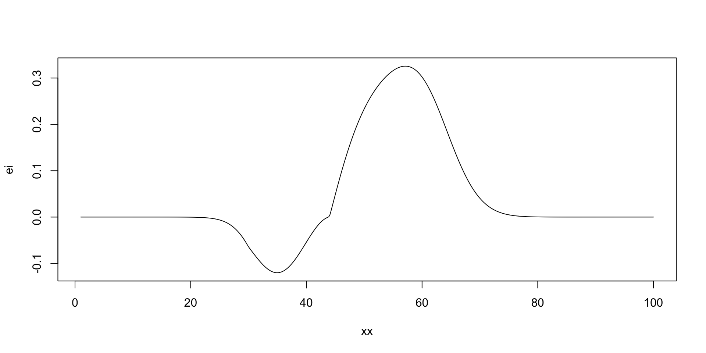
[1] 57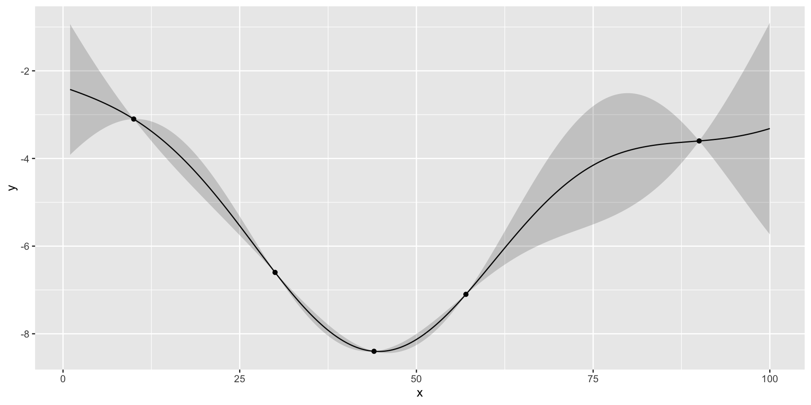
Run Optimisation
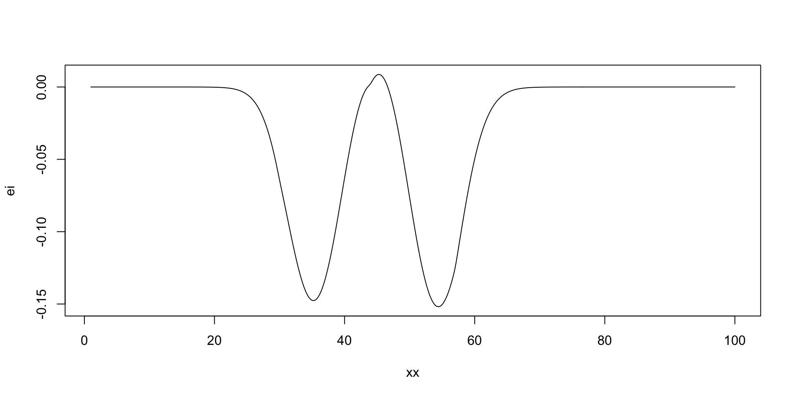
[1] 45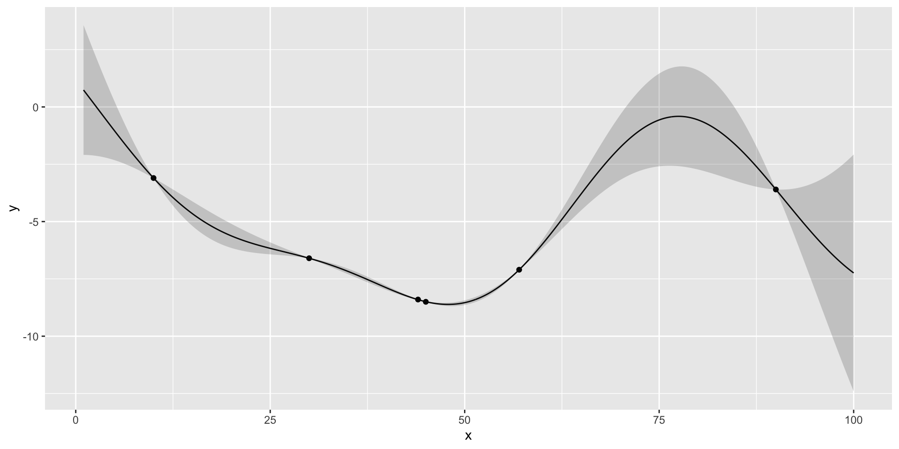
Run Optimisation
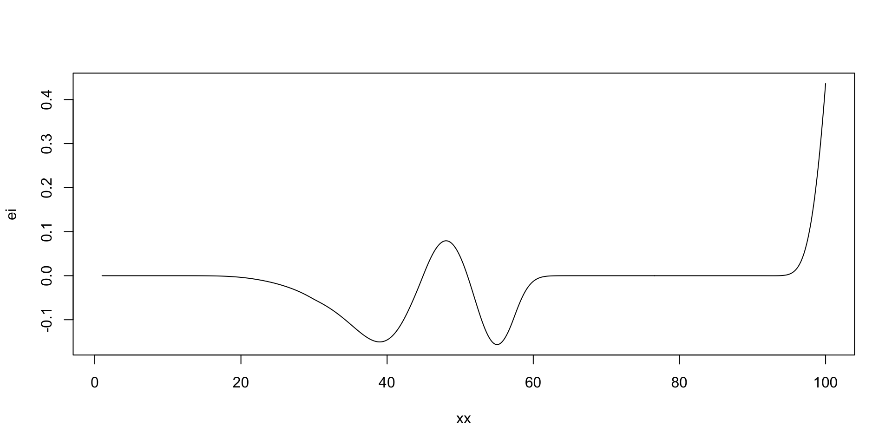
[1] 100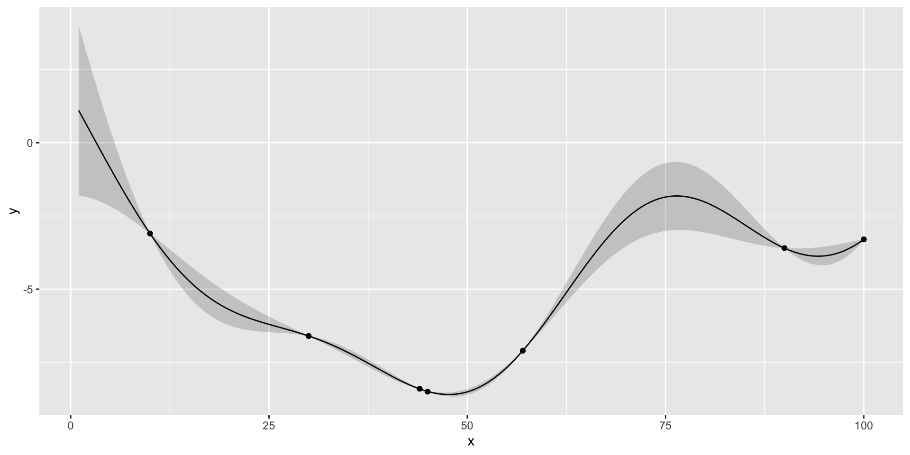
Run Optimisation: Stop
If we run nextsample one more time, we get 47, close to our current best of 45. Further, the model is confident at this location. It means that we can stop the algorithm and “declare a victory”